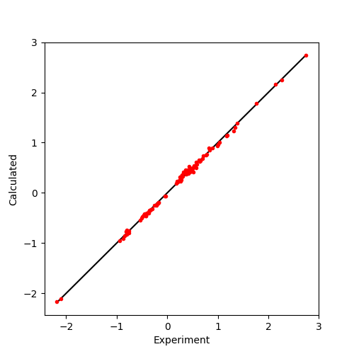

Fit Tensor to PCS Data¶
This example shows how to fit a DeltaChi tensor to experimental PCS data for the protein calbindin D9k.
First the protein is loaded from a PDB file using paramagpy.protein.load_pdb()
Instructions¶
- Download the data files here.
fit_pcs.py [source code]
from paramagpy import protein, fit, dataparse, metal
# Load the PDB file
prot = protein.load_pdb('../data_files/4icbH_mut.pdb')
# Load the PCS data
rawData = dataparse.read_pcs('../data_files/calbindin_Er_HN_PCS.npc')
# Associate PCS data with atoms of the PDB
parsedData = prot.parse(rawData)
# Define an initial tensor, and set the lanthanide to Er
mStart = metal.Metal()
mStart.set_lanthanide('Er')
# Set the starting position to an atom close to the metal
mStart.position = prot[0]['A'][56]['CA'].position
# Calculate an initial tensor from an SVD gridsearch
mGuess = fit.svd_gridsearch_fit_metal_from_pcs(
[mStart],[parsedData], radius=10, points=10)
# Refine the tensor using non-linear regression
fitParameters = ['x','y','z','ax','rh','a','b','g']
mFit = fit.nlr_fit_metal_from_pcs(mGuess, [parsedData], fitParameters)
# Print the info of the fitted tensor
print(mFit[0].info())
# Make two list of experimental and calculated values
xs = []
ys = []
for atom, exp_pcs, error in parsedData:
xs.append(exp_pcs)
ys.append(mFit[0].atom_pcs(atom))
# Plot the correlation
from matplotlib import pyplot as plt
fig, ax = plt.subplots(figsize=(5,5))
ax.plot([min(xs+ys),max(xs+ys)],[min(xs+ys),max(xs+ys)], '-k')
ax.plot(xs, ys, marker='o', lw=0, ms=3, c='r')
ax.set_xlabel("Experiment")
ax.set_ylabel("Calculated")
fig.savefig("pcs_plot.png")
# Plot the isosurface to be opened in PyMol
print(prot.id)
mFit[0].isomap(prot.id, density=1)
Output:
